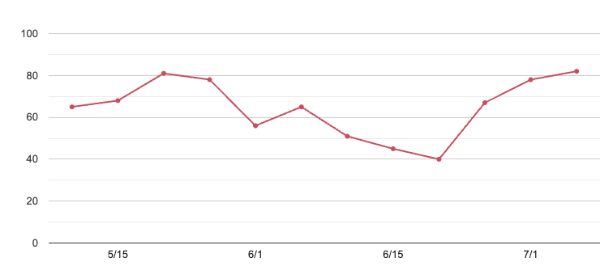

【Player: Kirihara Akaya｜切原赤也】
身長：170cm 体重：58kg 利き腕：右
足のサイズ：26.5cm 視力：右1.5 左1.5 血圧：高150 低90
プレイスタイル：アグレッシブ・ベースライナー
メーカー：
シューズ：WILSON / DT WILSON (DYNOSPHEREテクノロジー)
ラケット：WILSON / PRO STAFF 5.5 WILSON STRETCH
総合評価：
通常：スピード 4 / パワー 3 / スタミナ 3 / メンタル 2 / テクニック 3 / 合計 15
赤目：スピード 5 / パワー 4.5 / スタミナ 2 / メンタル 5 / テクニック 1.5 / 合計 16
■ ご機嫌トラッカー｜赤也の状態観測
主観的な観察に基づき、日々の「ご機嫌度」を数値化
定点記録（5月-7月）
2025年5月
05/15（木）
気温：20℃湿度：65%睡眠：5.5h前夜食：カツカレー
状態：午前は校内で遭遇した際、不機嫌気味だったが、午後の練習中盤から回復傾向。ラリー中の声出しが増加し、観察ログでは集中度70％以上。
備考：練習前のやり取りで「今日なんかめちゃ調子いい」と発言。
2025年6月
06/02（月）
気温：22℃湿度：60%睡眠：6.5h前夜食：鯖の味噌煮
状態：全体的に好調。集中度80％超えで、全体ミーティング時も寝ていなかった。終始上機嫌で、練習後も自主練を希望。
備考：俺柳蓮二に練習試合を希望。「今なら柳先輩倒せる気がするっス」と豪語。試合結果は5-2で赤也は敗北。
06/14（土）
気温：25℃湿度：72%睡眠：4h前夜食：カップ焼きそば
状態：眠気とだるさを訴え、練習への集中力は低調。プレー中に舌打ちが複数回記録される。
備考：夜中までゲームをしていたのが不調の原因と思われる。つられて弦一郎も神経質になっていた。
06/21（土）
気温：21℃湿度：67%睡眠：6h前夜食：カレー
状態：後衛の動きが鈍く、序盤は苛立ちが見られた。中盤からは落ち着きを取り戻す。
備考：試合形式中に1回ラケットを地面に叩きつけた。軽く制止。
06/26（木）
気温：23℃湿度：61%睡眠：6h前夜食：肉じゃが
状態：異様なハイテンション。基礎練だったが声出し過多、動きに若干の雑さあり。集中度は高いがムラも目立つ。
備考：「ねえねえ柳先輩、オレ今日超ノってないスか？」と5回発言。少し鬱陶しい。
06/30（月）
気温：18℃湿度：58%睡眠：7.5h前夜食：鯖の味噌煮
状態：全体的に落ち着いた動き。集中度は安定しており、プレー内容も終始高水準。
備考：赤也にしては珍しく、試合後「楽しかった」とコメント。
一昨日から関東大会向けメニューに切り替えているため、集中力ややる気が高まっているようだ。
2025年7月
07/1（火）
気温：26℃湿度：70%睡眠：5h前夜食：チョコパン（2個）
状態：イライラ気味で集中に波あり。練習中のミスで自己否定的な言動も。
備考：睡眠と糖分の組み合わせには要注意。家庭の都合で月居自分で夕食を用意しているらしい。
赤也の選択は雑になりがちで翌日に影響が出る確率が高い。
07/02（水）
気温：20℃湿度：63%睡眠：7h前夜食：ミートソーススパゲティ
状態：
序盤から表情が明るく、アップ中にも軽口を叩くなど余裕あり。
対仁王戦では予測のつかないプレーに苦戦しつつも冷静さを維持し、切り返しが光った。ただし5-4で負けている。
備考：
休憩中に「さっきオレ動きめちゃめちゃ良くなかったスか？」と仁王に言うと、
仁王は「こっちは絶賛不調じゃのぉ」と返答。以降しばらく静かになった。
07/03（木）
気温：28℃湿度：78%睡眠：4.5h前夜食：牛丼（大盛）
状態：
開始前から「あっつ…」と連呼しテンション低め。
練習中盤、ミスが重なると態度に出やすくなり、ラケットを手に持ったまま気忙しげに歩き回る姿が複数回記録される。
備考：「集中が切れているようだな。クールダウンするか？」という提案に対し、「まだやれるっス」とやや語気強めに反応。
俺の言い方にも問題があったかもしれない。最終的には冷水シャワー後に落ち着いた。
07/04（金）
気温：17℃湿度：58%睡眠：8h前夜食：ハヤシライス
状態：
朝からテンション高く、ランニング中に歌を口ずさむ姿が確認された。
午後のダブルス練習ではパートナー（柳）との連携もスムーズで、珍しく「今の、連携バッチリじゃね？」と自己評価を口にした。
備考：「気温が下がると、なぜか機嫌が安定する傾向あり」という仮説を強化。
07/05（土）
気温：21℃湿度：70%睡眠：6h前夜食：ハヤシライス
状態：
練習序盤は平常通りだったが、弦一郎の指摘に対し不満げな反応を見せた後、急に無口になる。
その後の球出し練習では動きが硬く、声かけも極端に減少。
備考：
内面で整理しきれない感情があると黙る傾向がある。怒るよりも沈黙の方が注意が必要。
帰りがけにアイスを奢ってやると機嫌が戻った。
07/06（日）
気温：24℃湿度：69%睡眠：5.5h前夜食：トンテキ
状態：
朝からややぼんやりしており、ランニング中に1度コースを間違える。
練習では判断ミスが目立ち、いつものような鋭さに欠ける内容。
怒るというより、本人も何が原因か掴めず終始「なんかおかしい」とぼやいていた。
備考：前夜食・睡眠の質が好調時と大きく異なる。無意識のパターン要素に注視すべき。
07/07（月）
気温：22℃湿度：60%睡眠：6h前夜食：クリームシチュー
状態：
表情・声量・フォーム全てにおいてバランスが取れており、安定したパフォーマンス。
練習試合では2セットを連取、プレー中の判断も的確だった。
備考：この日をベンチマークに設定するべきだろう。それほどの充実ぶりだった。
07/08（火）
気温：29℃湿度：75%睡眠：3.5h前夜食：チョコアイス＋ポテトチップス
状態：
開始早々から口数が少なく、無表情。動きにも精彩を欠き、ミスが続出。
練習後半では突然怒声を上げ、ボールを強打してコート外に飛ばす。
備考：
赤目モードには至らなかったが、暴走一歩手前の兆候あり。帰宅後モニタリングを実施した。
話しながら確認したところ、単純な睡眠不足、栄養の偏った食事に加え、
大会を目前に控えて無意識のうちに神経が昂り自律神経に若干影響が出ているようだ。
期末試験の結果が芳しくなかったことも関係があるのだろう。通話しながらリラックスしたのか途中で眠ってしまった。
07/09（水）
気温：19℃湿度：55%睡眠：8h前夜食：親子丼
状態：比較的安定。やや無口だったがプレーは丁寧。目立った感情起伏なし。
備考：練習前と後に仁王と小声で談笑していたのが印象的。
07/10（木）
気温：22℃湿度：55%睡眠：6.0h前夜食：オムライス
状態：
朝はやや興奮状態で、声量と動作に落ち着きが見られなかった。
練習メニューを早めに終わらせようとする傾向あり、集中度は一時的に乱れたが、後半はサーブ練習に没頭し徐々に安定。
通常時のフォームと「赤目モード」との境界がやや曖昧になっており、明日の試合における状態変化に要注意。
備考：
明日から関東大会に入る。「今日は調整メインにしておけ」と言われたにもかかわらず、自主的にダッシュ系メニューを追加。
夜のミーティング後に「まー楽勝っスよ」と発言していたが、語気は少し荒れていた。高揚が強めに出ている。